배우기 전에 먼저 해 보세요. 틀려도 괜찮아요.
Du solltest im Bett bleiben.은 어떤 말일까요?
sollte는 부드럽게 조언할 때 써요.
weil은 무엇을 말할 때 쓸까요?
weil 뒤에는 이유가 와요.
A2.1 Angekommen · Lektion 3
건강과 응급
음성은 준비 중이에요. 듣기 단추와 받아쓰기는 음성이 올라오면 쓸 수 있어요. 그동안은 글을 읽으면서 공부해요.
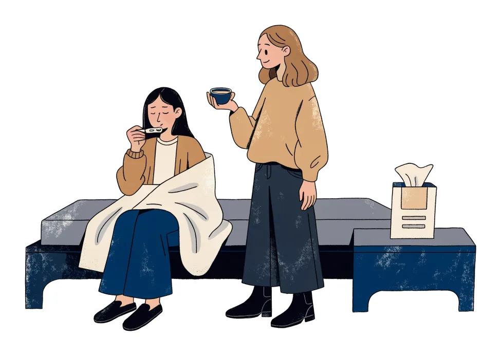
아프면 어디가 어떻게 아픈지 자세히 말해야 해요. 시험이나 일이 있는 날이면 못 간다고 알리고 진단서도 받아야 해요. 이 과에서는 증상을 설명하고, 조언하고, 이유를 대는 말을 배워요. 응급 전화를 거는 법도 익혀요.
문법 sollte, weil, reflexive Verben (sich fühlen, sich erkälten, sich ausruhen)
과제대학시험 기간에 아플 때 진단서(Attest) 받기
과제직장병가를 내고 진단서(Krankschreibung) 보내기
이 과를 마치면 증상을 자세히 설명하고, 조언하고, 아프다고 알리고, 응급 전화를 걸 수 있어요.
이 과에서 쓸 말이에요.
배우기 전에 먼저 해 보세요. 틀려도 괜찮아요.
Du solltest im Bett bleiben.은 어떤 말일까요?
sollte는 부드럽게 조언할 때 써요.
weil은 무엇을 말할 때 쓸까요?
weil 뒤에는 이유가 와요.
Lektion 2의 낱말 다섯 개를 다시 떠올려 보세요.
수요일 아침, WG예요. Jiu는 내일 어학원에서 시험을 봐야 하는데 몸이 안 좋아요.
들으면서 찾아보세요. Jiu는 왜 진단서가 필요한가요?
월요일 아침 7시 반이에요. Dohyun이 일을 시작하기 전에 팀장 Frau Hoffmann에게 전화해요.
들으면서 찾아보세요. 오늘 오후 회의는 누가 하나요?
저녁, Sora가 사는 건물의 계단이에요. 이웃 Herr Wolf가 계단에서 넘어졌어요. Sora가 112에 전화해요.
들으면서 찾아보세요. 구급차는 얼마나 뒤에 오나요?
세 대화를 듣고 답하세요.
Jiu는 어디가 안 좋은가요?
Jiu는 왜 진단서가 필요한가요?
Lena macht Jiu einen Tee.
Dohyun은 언제 병원에 가나요?
Dohyun muss die Krankschreibung selbst an die Firma schicken.
병원이 건강보험에 보내고 회사는 거기서 받아요.
오늘 오후 회의는 누가 하나요?
Sora의 이웃에게 무슨 일이 있었나요?
Der Nachbar soll aufstehen und zur Tür gehen.
움직이지 않는 게 좋다고 했어요.
낱말 46개예요. 명사는 der, die, das를 색으로 구분했어요.
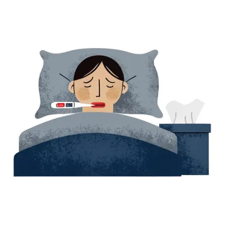
die Grippe 독감
Ich habe eine Grippe.저는 독감에 걸렸어요.
die Bauchschmerzen 복통
Seit gestern habe ich Bauchschmerzen.어제부터 배가 아파요.
die Rückenschmerzen 허리 통증, 등 통증
Mit Rückenschmerzen kann ich nicht sitzen.허리가 아파서 앉아 있을 수 없어요.
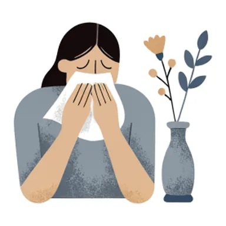
die Allergie, die Allergien 알레르기
Ich habe eine Allergie.저는 알레르기가 있어요.
der Durchfall 설사
Hana hat Durchfall.Hana가 설사를 해요.
Mir ist übel. 속이 안 좋아요, 메스꺼워요.
Mir ist seit heute Morgen übel.오늘 아침부터 속이 안 좋아요.
Mir ist schwindlig. 어지러워요.
Mir ist schwindlig. Ich muss sitzen.어지러워요. 앉아야겠어요.
husten (hat gehustet) 기침하다
Ich musste die ganze Nacht husten.밤새 기침을 했어요.
bluten (hat geblutet) 피가 나다
Er blutet am Kopf.그분은 머리에서 피가 나요.
das Blut 피
Ich kann kein Blut sehen.저는 피를 못 봐요.
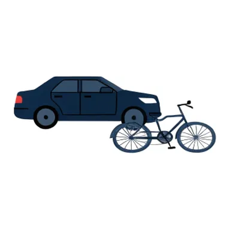
der Unfall, die Unfälle 사고
Markus hatte einen Unfall.Markus에게 사고가 났어요.
fallen (du fällst, ist gefallen) 넘어지다, 떨어지다
Er ist auf der Treppe gefallen.그분은 계단에서 넘어졌어요.
gebrochen 부러진
Der Arm ist gebrochen.팔이 부러졌어요.
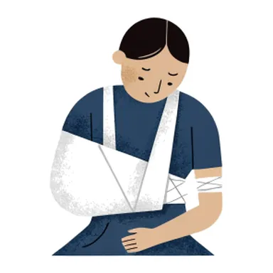
die Verletzung, die Verletzungen 부상, 다친 곳
Die Verletzung ist nicht schlimm.다친 곳은 심하지 않아요.
schlimm 심한, 나쁜
Ist es schlimm?심해요?
stark 심한, 센
Die Schmerzen sind sehr stark.통증이 아주 심해요.
schwach 힘이 없는, 약한
Ich fühle mich schwach.몸에 힘이 없어요.
sich fühlen (hat sich gefühlt) (몸이나 기분이) 어떻다고 느끼다
Wie fühlen Sie sich?몸은 어떠세요?
sich erkälten (hat sich erkältet) 감기에 걸리다
Ich habe mich erkältet.저는 감기에 걸렸어요.
sich ausruhen (hat sich ausgeruht) 쉬다
Ruhen Sie sich aus!푹 쉬세요!
sich hinlegen (hat sich hingelegt) 눕다
Leg dich wieder hin!다시 누워요!
sich bewegen (hat sich bewegt) 움직이다
Er sollte sich nicht bewegen.그분은 움직이지 않는 게 좋아요.
untersuchen (hat untersucht) 진찰하다
Die Ärztin untersucht den Hals.의사가 목을 진찰해요.
die Hausärztin, die Hausärztinnen 가정의 (여자)
Ich habe einen Termin bei meiner Hausärztin.가정의에게 예약이 있어요.
das Attest, die Atteste (학교에 내는) 진단서
Für die Prüfung brauche ich ein Attest.시험 때문에 진단서가 필요해요.
die Krankschreibung, die Krankschreibungen (직장에 내는) 병가 진단서
Die Praxis schickt die Krankschreibung an die Krankenkasse.병원이 병가 진단서를 건강보험에 보내요.
krankgeschrieben 병가 진단을 받은
Ich bin bis Freitag krankgeschrieben.저는 금요일까지 병가예요.
die Krankenkasse, die Krankenkassen 건강보험, 건강보험 회사
Meine Krankenkasse zahlt das Medikament.제 건강보험이 약값을 내요.
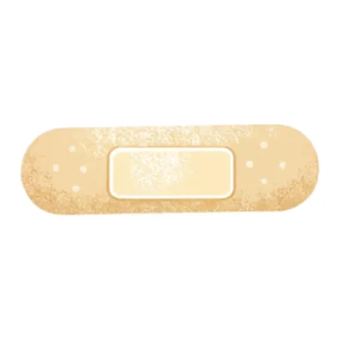
das Pflaster, die Pflaster 반창고
Hast du ein Pflaster?반창고 있어요?
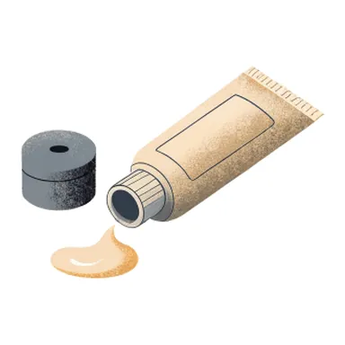
die Salbe, die Salben 연고
Die Salbe hilft bei Rückenschmerzen.그 연고는 허리 아플 때 좋아요.
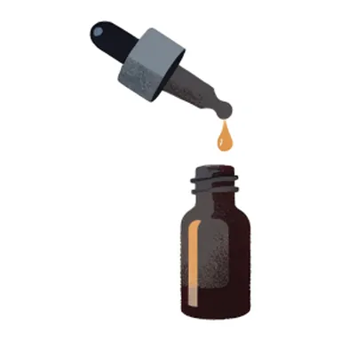
die Tropfen 물약, 넣는 약
Nehmen Sie die Tropfen dreimal am Tag.그 물약을 하루에 세 번 쓰세요.
im Bett bleiben 누워서 쉬다
Du solltest im Bett bleiben.누워서 쉬는 게 좋겠어요.
weil ~해서, ~하기 때문에
Ich komme nicht, weil ich krank bin.저는 아파서 못 가요.
der Notfall, die Notfälle 응급 상황
Das ist ein Notfall!응급 상황이에요!
der Notruf 응급 전화
Im Notfall ruft man den Notruf an.응급 상황에는 응급 전화에 걸어요.
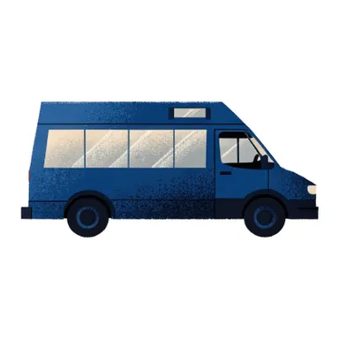
der Krankenwagen, die Krankenwagen 구급차
Der Krankenwagen kommt sofort.구급차가 바로 와요.
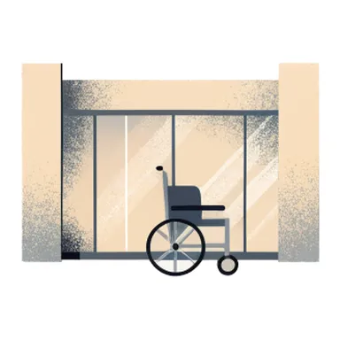
die Notaufnahme, die Notaufnahmen 응급실
Wir fahren in die Notaufnahme.우리는 응급실로 가요.
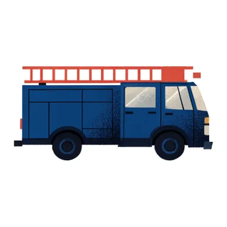
die Feuerwehr 소방서, 소방대
Die Feuerwehr ist schnell gekommen.소방대가 빨리 왔어요.
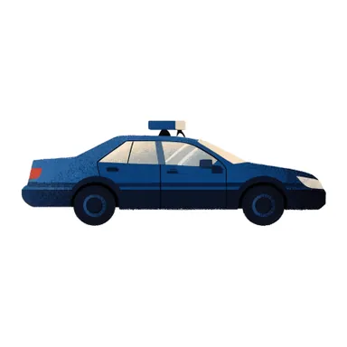
die Polizei 경찰
Ruf die Polizei an!경찰에 전화해요!
die Hilfe 도움
Ich brauche Hilfe!도와주세요!
Was ist passiert? 무슨 일이 있었어요?
Was ist denn passiert?무슨 일이 있었어요?
wach 깨어 있는, 의식이 있는
Ist er wach?그분은 의식이 있어요?
ungefähr 대략, ~쯤
Es dauert ungefähr acht Minuten.8분쯤 걸려요.
unterwegs 가는 중인, 오는 중인
Hilfe ist unterwegs.도와줄 사람들이 오고 있어요.
schnell 빠른, 빨리
Kommen Sie bitte schnell!빨리 와 주세요!
dringend 급한
Es ist dringend.급한 일이에요.
이 과의 낱말로 여덟 문제를 풀어요.
주어에 따라 mich, dich, sich가 달라져요.
sollte를 쓰면 부드러운 조언이 돼요.
규칙
sollte는 '~하는 게 좋겠다'는 조언이에요. A1.2에서 배운 sollen은 다른 사람이 시킨 일을 전할 때 쓰고, sollte는 내 생각을 부드럽게 말할 때 써요. 다른 조동사처럼 동사는 문장 끝에 Infinitiv로 와요.
| 주어 | sollte |
|---|---|
| ich | sollte |
| du | solltest |
| er, sie, es | sollte |
| wir | sollten |
| ihr | solltet |
| sie, Sie | sollten |
주의 Du musst zum Arzt gehen.은 꼭 가야 한다는 말이고, Du solltest zum Arzt gehen.은 가는 게 좋겠다는 말이에요. 조언을 구할 때는 Was soll ich machen?이라고 물어요.
규칙을 보고 바로 확인해 보세요.
Sie … viel Wasser trinken. 조언하는 말로 알맞은 것은 무엇인가요?
규칙
weil 뒤에는 이유가 와요. weil로 시작하는 문장에서는 동사가 맨 끝으로 가요. weil 앞에는 쉼표를 찍어요.
| 잇는 말 | 가운데 | 동사 |
|---|---|---|
| weil | ich krank | bin |
| weil | ich Fieber | habe |
| weil | sein Bein | wehtut |
| weil | ich viel husten | musste |
주의 denn 뒤에서는 낱말 순서가 그대로이고 weil 뒤에서는 동사가 끝으로 가요. Ich komme nicht, denn ich bin krank. Ich komme nicht, weil ich krank bin. 나뉘는 동사는 끝에서 다시 붙어요. weil ich früh aufstehe. Warum?이라고 물으면 Weil ich krank bin.처럼 짧게 답해도 돼요.
규칙을 보고 바로 확인해 보세요.
Ich bleibe zu Hause, weil ich Fieber … 빈칸에 알맞은 말은 무엇인가요?
규칙
몇몇 동사는 주어 자신을 가리키는 말과 함께 써요. 사전에는 sich fühlen처럼 sich와 함께 나와요. 주어에 따라 mich, dich, sich, uns, euch, sich로 바뀌어요.
| 주어 | 가리키는 말 | 예 |
|---|---|---|
| ich | mich | Ich fühle mich gut. |
| du | dich | Du erkältest dich. |
| er, sie, es | sich | Er ruht sich aus. |
| wir | uns | Wir ruhen uns aus. |
| ihr | euch | Ihr legt euch hin. |
| sie, Sie | sich | Sie fühlen sich gut. |
주의 mich, dich, sich는 동사 바로 뒤에 와요. Ich lege mich hin. Perfekt는 haben과 써요. Ich habe mich erkältet. 시키는 말에서도 빠지지 않아요. Leg dich hin! Ruhen Sie sich aus!
규칙을 보고 바로 확인해 보세요.
Wir ruhen … aus. 빈칸에 알맞은 말은 무엇인가요?
듣고 알맞은 것을 고르세요.
Jiu는 어디가 안 좋은가요?
Ich habe mich erkältet, und mein Hals tut weh.
Frau Hoffmann은 무엇을 권하나요?
Sie sollten heute zu Hause bleiben und sich ausruhen.
Dohyun은 언제까지 쉬나요?
Ich bin bis Freitag krankgeschrieben.
이웃에게 무슨 일이 있었나요?
Mein Nachbar ist auf der Treppe gefallen und blutet am Kopf.
Dohyun이 가정의 Dr. Neumann에게 왔어요. 듣고 알맞은 것을 고르세요.
In der Praxis
Dr. Neumann Guten Tag, Herr Park. Wie fühlen Sie sich?
Dohyun Nicht gut. Ich habe seit gestern Fieber, und mein Rücken tut weh.
Dr. Neumann Ich untersuche Sie jetzt. Ja, Sie haben eine Grippe.
Dr. Neumann Sie sollten viel trinken und im Bett bleiben. Ich schreibe Sie bis Freitag krank.
Dohyun Darf ich am Donnerstag wieder arbeiten?
Dr. Neumann Nein. Sie sollten sich wirklich ausruhen, weil Sie Ruhe brauchen.
Dohyun은 무슨 병에 걸렸나요?
Dohyun은 언제까지 병가인가요?
Was sollte Dohyun machen?
어학원 게시판에 붙은 안내예요. 읽고, 맞으면 richtig, 틀리면 falsch를 고르세요.
Krank am Prüfungstag?
Sie sind am Prüfungstag krank? Dann machen Sie bitte das:
1. Rufen Sie vor der Prüfung im Büro an oder schreiben Sie eine E-Mail.
2. Gehen Sie am Prüfungstag zum Arzt. Sie brauchen ein Attest.
3. Geben Sie das Attest in drei Tagen im Büro ab.
Dann können Sie die Prüfung vier Wochen später schreiben. Sie müssen nicht noch einmal zahlen.
Ohne Attest haben Sie die Prüfung nicht bestanden.
Man muss vor der Prüfung anrufen oder schreiben.
Man kann eine Woche später zum Arzt gehen.
시험 날 병원에 가야 해요.
Man hat drei Tage Zeit für das Attest.
Für die Prüfung später muss man noch einmal zahlen.
다시 내지 않아도 돼요.
Ohne Attest hat man die Prüfung nicht bestanden.
조언하는 말이에요. 알맞은 모양을 고르세요.
Du heute im Bett bleiben.
오늘은 누워서 쉬는 게 좋겠어요.
Sie zum Arzt gehen, Herr Park.
병원에 가시는 게 좋겠어요, Herr Park.
Jiu viel Tee trinken.
Jiu는 차를 많이 마시는 게 좋아요.
Wir den Notruf anrufen.
응급 전화에 거는 게 좋겠어요.
Ihr euch ausruhen.
여러분은 쉬는 게 좋겠어요.
알맞은 말을 고르세요.
Ich fühle nicht gut.
저는 몸이 안 좋아요.
Hast du erkältet?
감기에 걸렸어요?
Dohyun ruht zu Hause aus.
Dohyun은 집에서 쉬어요.
Wir legen nach dem Essen hin.
우리는 밥을 먹고 누워요.
Wie fühlen Sie heute?
오늘 몸은 어떠세요?
Ruht am Wochenende aus!
주말에 푹 쉬어요!
weil 아니면 denn? 낱말 순서를 보고 고르세요.
Ich komme nicht, ich krank bin.
아파서 못 가요.
Ich komme nicht, ich bin krank.
못 가요. 아프거든요.
Jiu braucht ein Attest, sie morgen eine Prüfung hat.
Jiu는 내일 시험이 있어서 진단서가 필요해요.
Dohyun bleibt zu Hause, er hat Fieber.
Dohyun은 집에 있어요. 열이 나거든요.
Er kann nicht aufstehen, sein Bein wehtut.
다리가 아파서 그분은 일어나지 못해요.
낱말을 순서대로 눌러 문장을 만드세요.
열이 나서 집에 있어요.
병원에 가는 게 좋겠어요.
저는 감기에 걸렸어요.
그 사람은 아파서 못 와요.
몸은 어떠세요?
문제와 도움이 되는 것을 짝지으세요.
빈칸에 알맞은 낱말을 쓰세요.
Mir ist . Ich möchte nichts essen.
속이 안 좋아요. 아무것도 먹고 싶지 않아요.
Der kommt in acht Minuten.
구급차가 8분 뒤에 와요.
Ich bin bis Freitag .
저는 금요일까지 병가예요.
Für die Prüfung brauche ich ein .
시험 때문에 진단서가 필요해요.
듣고 그대로 써 보세요.
음성 준비 중Ich fühle mich nicht gut. 저는 몸이 안 좋아요.
음성 준비 중Du solltest zum Arzt gehen. 병원에 가는 게 좋겠어요.
음성 준비 중Ich kann nicht kommen, weil ich krank bin. 아파서 못 가요.
Ich fühle mich nicht gut. 몸이 안 좋아요.
Ich habe mich erkältet. 감기에 걸렸어요.
Mir ist übel. 속이 안 좋아요.
Mein Rücken tut seit gestern weh. 어제부터 허리가 아파요.
Du solltest zum Arzt gehen. 병원에 가는 게 좋겠어요.
Sie sollten viel trinken. 물을 많이 드시는 게 좋겠어요.
Ruh dich aus! 푹 쉬어요!
Gute Besserung! 얼른 나으세요!
Ich kann nicht kommen, weil ich krank bin. 아파서 못 가요.
Ich brauche ein Attest, weil ich morgen eine Prüfung habe. 내일 시험이 있어서 진단서가 필요해요.
Ich kann heute leider nicht kommen. 오늘은 아쉽게도 못 가요.
Ich habe um zehn einen Termin bei meiner Hausärztin. 10시에 가정의 예약이 있어요.
Ich bin bis Freitag krankgeschrieben. 금요일까지 병가예요.
Ich rufe Sie nach dem Termin noch einmal an. 진료가 끝나면 다시 전화드릴게요.
Ich brauche Hilfe! 도와주세요!
Mein Nachbar ist auf der Treppe gefallen. 이웃이 계단에서 넘어졌어요.
Er blutet am Kopf. 머리에서 피가 나요.
Wir sind im ersten Stock. 우리는 2층에 있어요.
과제 고르기
역할 대화와 말하기, 쓰기 과제는 대학 생활과 직장 생활 두 가지예요. 하나를 고르면 다음 과에서도 그쪽 과제가 나와요. 언제든 바꿀 수 있어요.
대화 A에서 역할을 하나 고르세요. 상대의 말은 글로 읽고, 내 차례에는 직접 말해요.
대화 B에서 역할을 하나 고르세요. 상대의 말은 글로 읽고, 내 차례에는 직접 말해요.
내가 자주 겪는 증상을 떠올리고 칸을 채우세요. 완성된 문장을 소리 내어 읽어 보세요.
Ich habe im Winter oft Kopfschmerzen.
Dann sollte ich viel Tee trinken.
Ich sollte nicht lange am Computer sitzen.
내일 9시에 어학원에서 시험이 있어요. 그런데 어제저녁부터 열이 나고 목이 아프고 기침이 나요. 병원에 전화해서 오늘 진료를 받고 진단서를 받으려고 해요.
열은 38.5도예요. 오늘 오전에 가고 싶어요. 시험 때문에 진단서(Attest)가 필요해요.
병원에 전화해요. 접수하는 분의 질문에 쪽지를 보고 답하세요. 질문을 듣고 소리 내어 답한 뒤 예시 답과 비교해 보세요.
Praxis Dr. Neumann, guten Morgen. Neumann 선생님 병원입니다, 좋은 아침이에요.
Guten Morgen, hier ist Minji Choi. Ich bin krank und brauche heute einen Termin.
Was haben Sie denn? 어디가 안 좋으세요?
Ich habe mich erkältet. Ich habe Fieber und Halsschmerzen, und ich muss viel husten.
Seit wann haben Sie Fieber? 열은 언제부터 났어요?
Seit gestern Abend.
Können Sie um halb elf kommen? 10시 반에 오실 수 있어요?
Ja, das passt. Ich brauche auch ein Attest, weil ich morgen eine Prüfung habe.
Kein Problem. Bringen Sie bitte Ihre Versichertenkarte mit. 문제없어요. 건강보험 카드를 가져오세요.
Ja, das mache ich. Vielen Dank!
Eine E-Mail an die Sprachschule
어학원 사무실에 시험에 못 간다고 알리는 메일을 써 보세요. 다섯 문장이면 충분해요.
Sehr geehrte Frau Wagner, ich kann morgen leider nicht zur Prüfung kommen, weil ich krank bin. Ich habe Fieber und Halsschmerzen. Heute gehe ich zum Arzt und hole ein Attest. Ich bringe das Attest am Donnerstag ins Büro. Kann ich die Prüfung später schreiben? Mit freundlichen Grüßen, Minji Choi
다 쓴 뒤에 확인해 보세요.
아침에 일어나니 열이 나고 허리가 많이 아파요. 일을 시작하기 전에 팀장 Frau Hoffmann에게 전화해요.
10시에 가정의에게 가요. 며칠 쉬어야 하는지는 아직 몰라요. 진료가 끝나면 다시 전화할 거예요. 오늘 오후 2시에 고객과 통화하기로 했는데, Markus에게 부탁하려고 해요.
팀장 Frau Hoffmann에게 전화해요. 쪽지를 보고 답하세요. 질문을 듣고 소리 내어 답한 뒤 예시 답과 비교해 보세요.
Hoffmann, guten Morgen. Hoffmann입니다, 좋은 아침이에요.
Guten Morgen, Frau Hoffmann. Ich kann heute leider nicht kommen, weil ich krank bin.
Oh, das tut mir leid. Was haben Sie denn? 저런, 안됐네요. 어디가 안 좋으세요?
Ich habe Fieber, und mein Rücken tut sehr weh.
Gehen Sie zum Arzt? 병원에 가세요?
Ja, ich habe um zehn Uhr einen Termin bei meiner Hausärztin.
Wie lange sind Sie krank? 얼마나 쉬셔야 해요?
Das weiß ich noch nicht. Ich rufe Sie nach dem Termin noch einmal an.
Und der Termin mit dem Kunden um zwei? 2시 고객 통화는요?
Kann Markus das machen? Ich schreibe ihm gleich eine Nachricht.
Eine Nachricht an das Team
진료를 받고 나서 팀에 메일을 써 보세요. 다섯 문장이면 충분해요.
Liebe Kolleginnen und Kollegen, ich war heute bei der Ärztin. Ich habe eine Grippe und bin bis Freitag krankgeschrieben. Markus macht diese Woche meine Termine, weil ich im Bett bleiben muss. Am Montag bin ich wieder im Büro. Vielen Dank für eure Hilfe! Viele Grüße, Minji
다 쓴 뒤에 확인해 보세요.
Ich kann sagen, wie ich mich fühle und was mir wehtut.몸 상태가 어떤지, 어디가 아픈지 말할 수 있어요.
Ich kann sagen, was jemand tun sollte.다른 사람에게 조언할 수 있어요.
Ich kann mit weil einen Grund sagen.weil로 이유를 말할 수 있어요.
Ich kann mich krankmelden und im Notfall Hilfe rufen.아프다고 알리고 응급 상황에 도움을 청할 수 있어요.